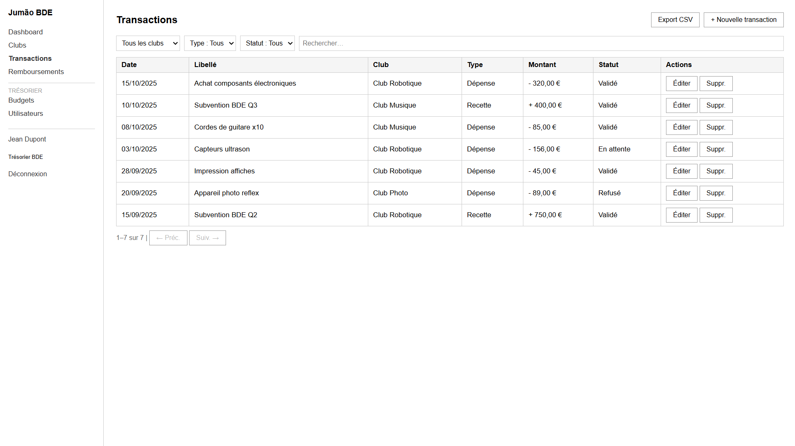

R
R HTML
HTML CSS
CSS SQL
SQL JS
JS PHP
PHP Power BI
Power BI Git
Git Pack Office
Pack Office Anglais renforcé
Anglais renforcé
01
 Python
WEB
Python
WEB
Gestion de trésorerie — BDE ISEN
Python
WEB
- Application web pour centraliser la gestion financière du BDE ISEN.
- Suivi des dépenses/recettes, factures, tableau de bord de trésorerie.
- Coordination des clubs : centralisation des demandes de budget.
 Gabz29
Gabz29